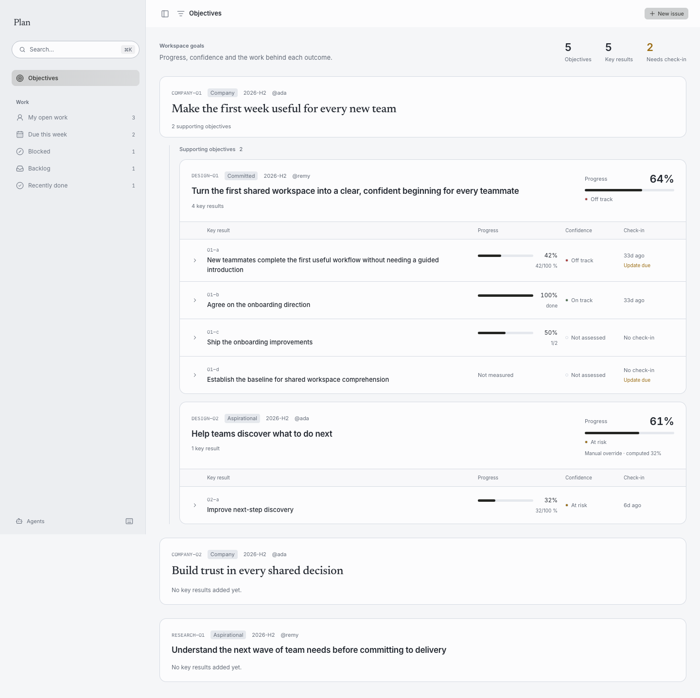
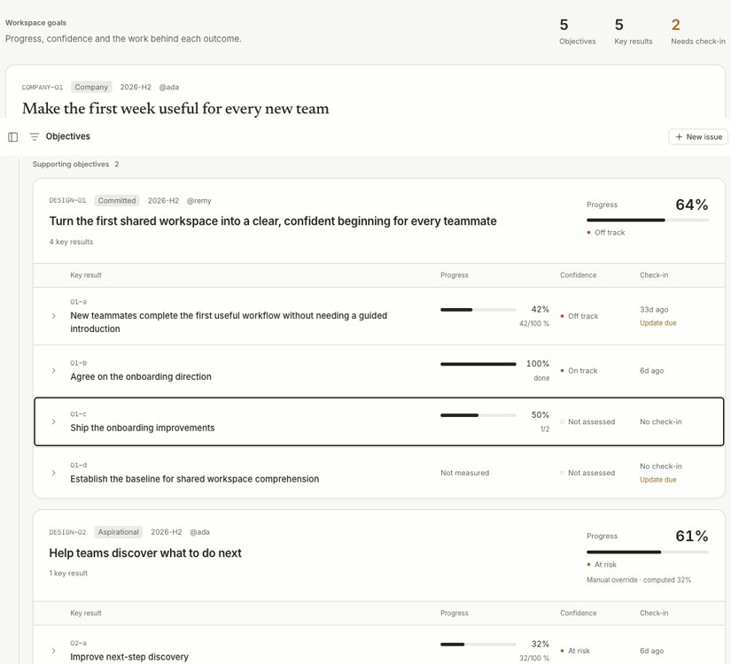

Objectives and key results
Open Objectives in Plan's sidebar. The overview counts objectives, key results and results whose check-ins are due. Company goals group the objectives supporting them beneath a labeled branch. Objectives without a resolved company parent appear on their own.

Each objective separates its code, kind, owner and period from the title. Its progress stays in a dedicated summary. When a manual override differs from the calculated value, both numbers are identified. An unmeasured objective says Not measured; an empty one stays compact rather than drawing an empty progress bar.
Key results align in columns for the outcome, progress, confidence and check-in. Titles wrap so the full outcome remains readable. Confidence uses On track, At risk, Off track or Not assessed, alongside the existing semantic color. The check-in column combines age and Update due, without repeating the age in a warning badge. Completed binary key results no longer need check-ins and never show Update due. Unfinished binary results and metrics still become due after 14 days without a check-in; metrics retain this rule even at 100%, because their measure can recur.
Select a key result to expand its measurement, source, latest dated note and linked issues, projects and milestones. Focus the row and press Enter or Space to toggle it with the keyboard. Issue links open their issue pages.

The view reflows inside narrower windows, keeping the outcome and percentage readable together and placing confidence and check-in below. It supports light, dark and reduced-motion preferences.
Objective definitions, check-ins, linked-work progress and manual overrides read from the workspace's Markdown. The view uses the same calculated values as tracker okr.
The header’s New issue uses the workspace’s light primary button, matching New canvas in Think.